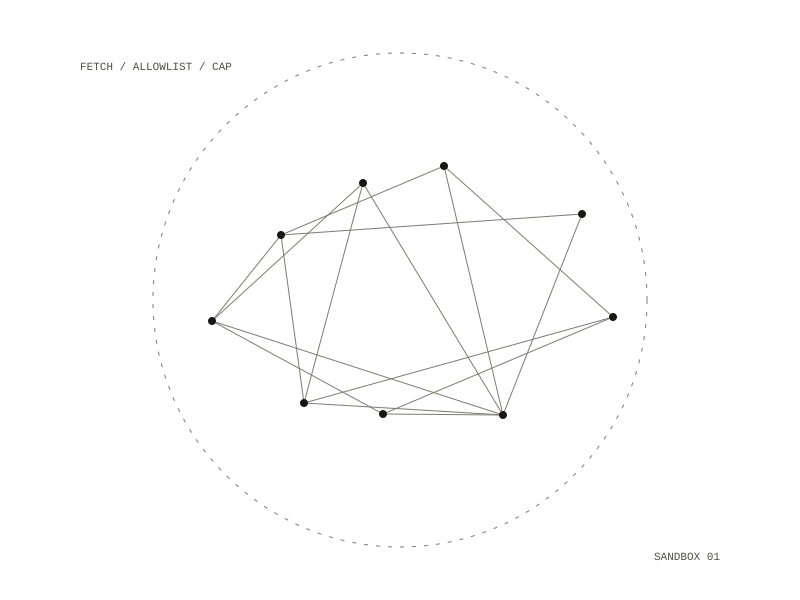

Fetch Sandbox
Fetch Sandbox was designed as the fourth layer of a defense against instructions hidden in fetched web content: a fetcher inside a micro virtual machine that reaches only allowlisted domains, caps decompressed size and runs as a non-root user. It was to offer the agent a single tool, a safe URL fetch, which takes a URL, a byte limit and a timeout and returns the status, the headers and the body as Markdown.

The other three layers
The first three layers are permission deny rules, a hook that catches patterns such as piping to a shell or writes to git hooks, and having fetched HTML read by separate helper agents so the main one only sees structured JSON.
Invariants
- a micro virtual machine boundary, never a plain container
- outbound traffic only to allowlisted domains
- a decompression cap of 10 to 50 MB
- a single tool surface, never raw HTTP library access
- a non-root user inside the virtual machine
Allowlist
A host was to be allowed only when its registrable domain exactly matches an allowlist entry, with no wildcard patterns, substrings or plain suffix matching. After that check the name was to be resolved, the request refused if the address is private, loopback, link-local, multicast or reserved, and the connection made to the checked address, a defense against DNS rebinding. The planned tests covered subdomain and substring tricks, rebinding to loopback, private IPv4 addresses, IPv6 link-local, the cloud metadata address, trailing dots, letter case, punycode and IP addresses written as decimal numbers.
Decompression cap
The cap was to count bytes after decompression, never compressed or chunked bytes, and never infer the decompressed size from Content-Length. A gzip or brotli bomb was to be cut off at 50 MB as it streams. The first smoke test was to pass an allowlisted fetch, block a fetch outside the list and abort a gzip bomb at the cap.
a micro virtual machine, non-root user
10 to 50 MB, counted after decompression
one: a safe URL fetch